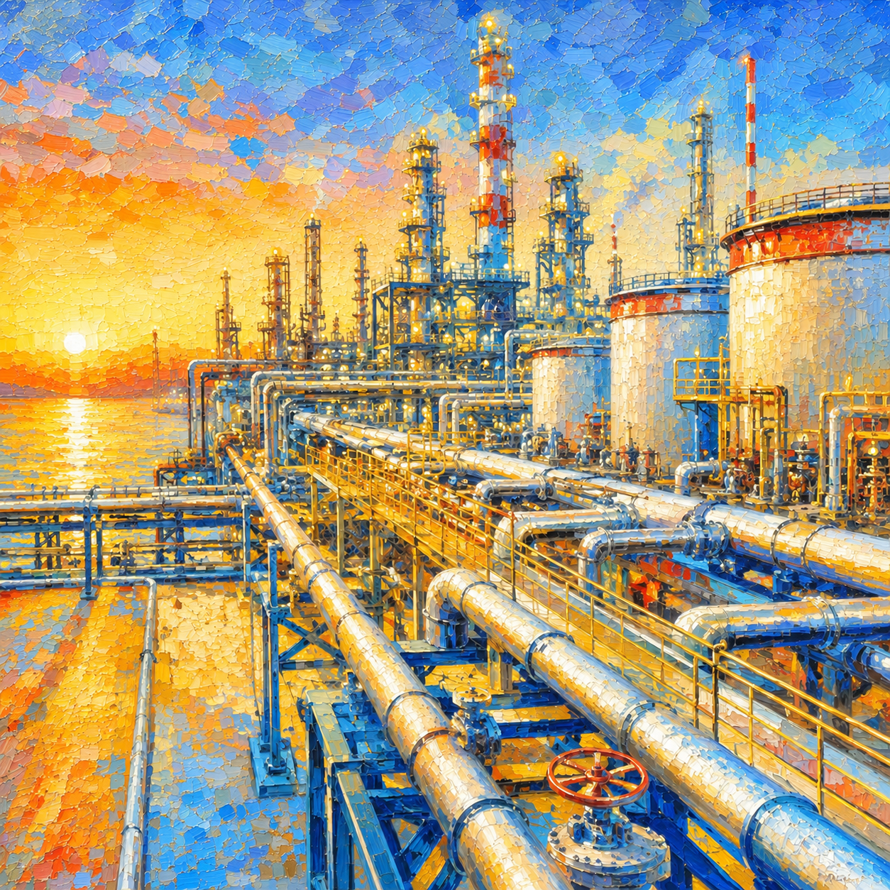

NurdleDNA detects microplastic pellets and gas hazards, closes the drain valve, captures evidence, and creates a live compliance report before pollution escapes.
A Industrial source
B Protected drain
C Coastal water
Valve response
< 1 sec
Captured mass
18.6 g
Smart environmental System
Detect. Contain. Prove. Report.
A compact inline device turns factory drainage into a monitored protection layer. AI vision counts nurdles, sensors detect VOC and turbidity risk, an actuator closes the valve, and an evidence cartridge captures material for audit and cleanup.
Detect leakage
An NVIDIA Jetson Nano runs YOLOv8 AI vision on the optical flow cell while an MQ-135 gas sensor and LDR turbidity probe confirm the incident at the industrial source.
Stop escape
An Arduino Uno FSM triggers the MG996R servo pinch valve within one second, diverting contaminated flow into a protected capture path.
Capture evidence
Nurdles collect inside a removable mesh cartridge while an HX711 load cell records captured mass in grams — physical, auditable evidence.
Report action
Every incident is time-stamped and uploaded to Firebase with Bay ID, DNA source, proof image, valve state, and maintenance action.
Inside the box
The hardware stack
Two processors. Three sensor channels. One pinch valve. A pellet cartridge with a load cell. Every component below is wired into the FSM and observable in the live demo.
NVIDIA Jetson Nano
AI vision & cloud uplink
Runs YOLOv8n on the optical-flow-cell camera feed, classifies pellets, computes the Density Index, and pushes the audit packet to Firebase Realtime Database.
Arduino Uno
Real-time FSM & actuation
Reads analog sensors at 5 Hz, runs the 5-state Moore FSM, drives the servo pinch valve, and latches the alarm until the operator presses the physical RST button.
CSI/USB Camera + UV LED
Optical detection
Captures the transparent flow-cell at 30 fps. A 365 nm UV LED ring excites pellet fluorescence so the AI can fingerprint the polymer source (DNA Source field).
MQ-135 / MQ-4 Gas Sensor
Headspace VOC monitoring
Mounted in the chamber headspace. Detects volatile organic compounds and ammonia leakage from the pellet stream. Critical threshold latches the FSM into S3 (ALRM).
LDR Turbidity Probe
Water clarity proxy
Photoresistor pair across the flow cell. Reads water turbidity as a corroborating signal to the AI vision count — confirms a contamination event before the FSM commits.
HX711 + Load Cell
Captured-mass evidence
Weighs the evidence cartridge during latched alarm. Reports captured mass in grams to the audit packet — physical proof for compliance reports.
MG996R Servo + Pinch Valve
Containment actuator
180° servo squeezes a silicone tube to close the outlet path within one second of S3 latch — diverting contaminated flow into the cartridge instead of the drain.
Peristaltic Pump
Closed-loop flow
Maintains a constant water-flow rate through the optical cell so the sample is representative. Cuts off automatically on alarm to stop further contaminant egress.
Mixing Chamber
Anti-settling pre-stage
Inline turbulence section that homogenises the water sample before it enters the optical flow cell. Prevents pellets from settling so the AI sees a representative sample, not a stratified one.
LCD · LEDs · Buzzer
Local indicators
I²C 16×2 LCD displays the current FSM state and operator messages. RGB LEDs (green / yellow / red) and a piezo buzzer mirror the FSM output stage so a worker can read the status from across the bay.
Data flow
Sensors
LDR · MQ-135 · HX711 · Camera
→
Arduino Uno
FSM · valve · LCD · LEDs
⇄ JSON
Jetson Nano
AI vision · Density Index
→
Firebase RTDB
Audit packet · /devices/NURDLE-001
→
Web dashboard
Live HUD · 3D twin
Jetson → Arduino · 1 Hz
{
"state": "WARN | CRIT | CLEAR",
"confidence": 0.85,
"count": 12
}Arduino → Jetson · 5 Hz
{
"fsm_state": "S1",
"valve": "OPEN",
"ldr": 542,
"gas": 380,
"load_g": 3.4
}One device. Four layers of protection.
NurdleDNA combines AI vision, gas sensing, valve actuation, and a load-cell evidence cartridge inside a single industrial monitoring workflow.
Loading Bay 03Live

It protects the coastline and the balance sheet.
Sustainability
Stops pellets before they reach drains, sea, or soil.
Environment
Protects stormwater systems, coastal water, and marine life.
Economy
Reduces cleanup cost, avoids fines, and enables compliance SaaS revenue.
Auditable circular economy
Not just an alert. A complete evidence chain.
Incident Report
Generated
- Location
- Industrial loading bay
- Bay ID
- Loading Bay 03
- Event type
- Pellet leakage + VOC warning
- AI confidence
- 94%
- Pellet count
- 126
- Captured mass
- 18.6 g
- Proof image
- Saved
See it in action
Watch the full contamination response cycle.
The interactive digital twin walks through all five stages — site commissioning, safe monitoring, spill detection, valve lockdown, and audit report — driven by the same logic as the real device.
Open digital twin →The people behind it
Arc Tech — Team 2
ECTE 250 · University of Wollongong in Dubai
Muhammad Haaziq
System Architect
3D Model & Project Lead
Faaz Ali Sayyed
Circuit Design
State Machine & TinkerCAD
Daniel Koshy
Circuit Simulation
Multisim & Finance / WBS
Mohammed Abdul Rahman
Marketing
Meeting Management